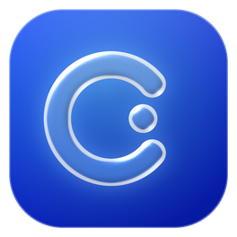

Chrome Client
A clean Minecraft launcher and in-game menu, built for PvP.
DownloadWindows · Free · Chrome-Client.zip
Download started. Unzip it and run setup.bat.
The mod
In-game features
- One menuPress Right Shift. HUD, Render and Music settings, all saved.
- HUD infoFPS, CPS, ping, coordinates, direction and clock.
- KeystrokesWASD, mouse buttons and space light up as you press them.
- Armor statusYour armor pieces with the durability left on each.
- Move HUDDrag the info, keystrokes, armor and the game's own hotbar, health and more.
- Zoom and FreelookHold C to zoom. Hold Alt to look around without turning.
- Auto sprintHold forward and you sprint.
- WardrobeHats, capes and wings on your own character. Other Chrome Client players see yours.
- SocialFriends and messages in the pause menu.
- Pay timerResets to 10 seconds every time someone gets outbid.
- EnvironmentSky, fog and particle themes in green, blue, red, yellow or your own color.
- Crosshair and low fireA custom crosshair, and a shorter fire overlay.
The launcher
Launcher features
- Mods from ModrinthSearch and install inside the launcher. Missing dependencies are fetched for you.
- Fabric in one tickTick Fabric and the launcher installs and starts it.
- Texture packs and groupsSwitch a whole group of packs on or off at once.
- ThemesFlat rounded cards in any color, with picture backgrounds if you want.
- Discord statusShow "Playing Minecraft" with your own text and timer.
- Streaming modeHides your Windows username and folder paths in the window.
- PerformanceInstalls Entity Culling and starts the game with tuned Java flags.
- Soft soundsGentle UI sounds across the launcher.
Install in 3 steps
- Press Download and unzip the file anywhere.
- Double-click
setup.bat. It installs what the launcher needs and makes a desktop shortcut. If Python is missing, install it with "Add python.exe to PATH" ticked, then runsetup.batagain. - Open Chrome Client from your desktop and press Play.